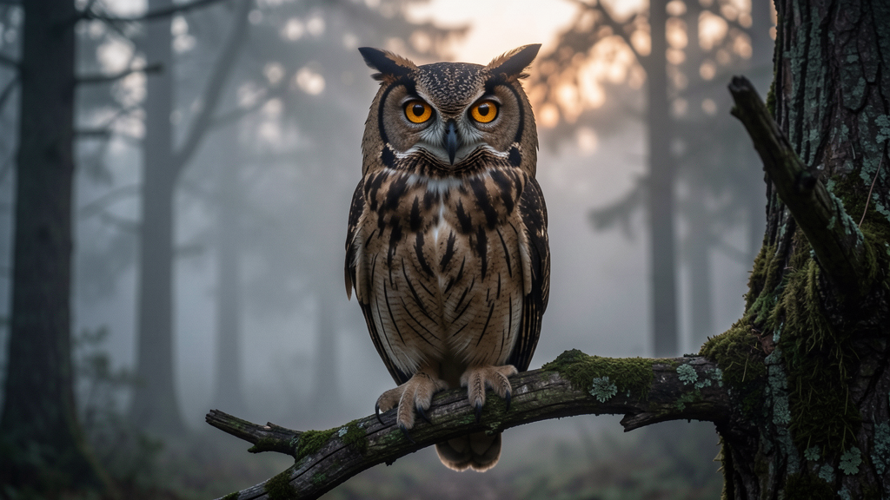

Scientific name: Strigiformes (order) · Habitat: Forests, grasslands, deserts, Arctic tundra worldwide · Diet: Carnivorous — small mammals, birds, insects, reptiles · Fun fact: Owls can rotate their heads up to 270° because they have fixed eye sockets. They are sagacious hunters that hunt mostly at dusk — making them crepuscular by nature.
| 💼 Work: | The CEO made a sagacious decision to pivot the product line before the market shifted. |
| 🎓 Education: | Her sagacious approach to research — always reading three sources before forming an opinion — impressed every professor. |
| ❤️ Personal: | It was sagacious of him to keep an emergency fund, a lesson his parents drilled into him early. |
| 🌊 Nature: | Deer are crepuscular — you are most likely to spot them grazing at dawn and dusk. |
| 📰 News: | The photographer waited until crepuscular light bathed the lighthouse before taking the award-winning shot. |
| 🏔️ Travel: | Many desert animals are crepuscular to avoid the brutal midday sun while still having enough light to hunt. |
| 🏛️ History: | The raptor was a symbol of power in ancient Rome — the aquila (eagle) adorned military standards. |
| 🔬 Science: | Paleontologists debate whether certain dinosaur species were the ancestors of modern raptor birds. |
| 💼 Work: | He earned the nickname "Raptor" in the trading floor for his ability to spot weakness in a deal before anyone else. |
| 🔍 Investigation: | Witnesses described a nocturnal prowler near the warehouse the night before the break-in. |
| 🏟️ Sport: | The defender was a nocturnal prowler on the field — always appearing from the shadows to steal the ball. |
| 💬 Debate: | He wasn't solving the problem — he was just hooting at the moon from the sidelines without ever proposing a solution. |
| 🎓 Education: | The professor told the student that his theory, while creative, amounted to hooting at the moon without empirical support. |
Five questions covering every word and phrase from this lesson. Click any answer — green = correct, red = wrong.
Q1. The boardroom fell silent after the CEO's _____ assessment of the company's position — she had clearly thought several years ahead.
Q2. The photographer timed the shoot for the _____ hours — that magical window just after sunset when shadows grow long and golden.
Q3. The falcon perched on the glove of the handler, its hooked beak marking it unmistakably as a _____ of considerable value.
Q4. The leopard became a _____ under cover of darkness, slipping between the acacia trees where no safari jeep could follow.
Q5. Before the meeting, he spent twenty minutes complaining about the industry, but by the end he had offered nothing useful — just _____.